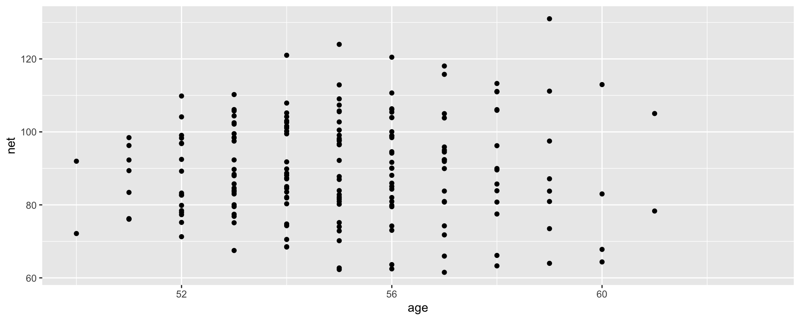
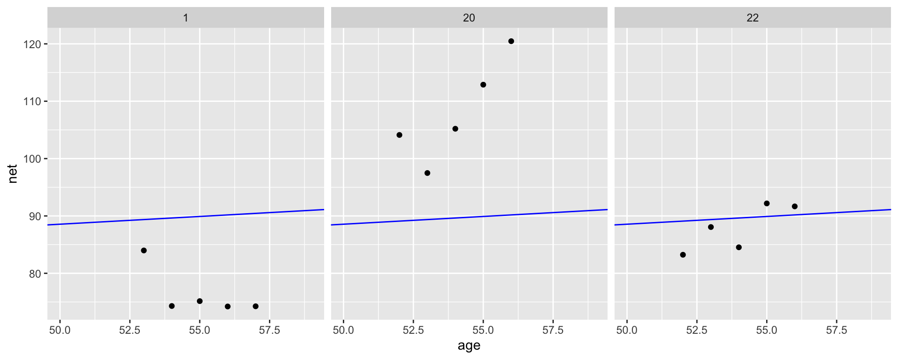
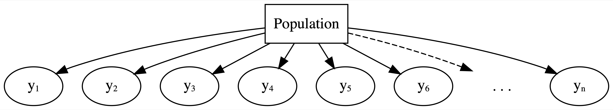
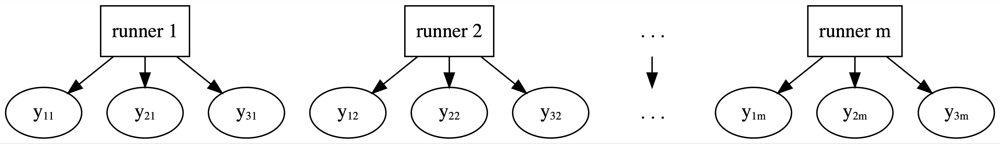

Hierarchical Linear Models with No Predictors
Note that examples in this lecture a modified version of Chapter 16 of Bayes Rules! book
Packages
Data
data(cherry_blossom_sample)
running <- cherry_blossom_sample %>%
select(runner, age, net)
glimpse(running)Rows: 252
Columns: 3
$ runner <fct> 1, 1, 1, 1, 1, 1, 1, 2, 2, 2, 2, 2, 2, 2, 3, 3, 3, 3, 3, 3, 3, …
$ age <int> 53, 54, 55, 56, 57, 58, 59, 52, 53, 54, 55, 56, 58, 59, 51, 52,…
$ net <dbl> 83.98333, 74.30000, 75.15000, 74.21667, 74.25000, NA, NA, 82.66…Complete Pooling
Complete pooling technique: combine all 252 observations across our 36 runners into one pool of information.
Complete Pooling
\[Y_i | \beta_0, \beta_1, \sigma \stackrel{ind}{\sim} N\left(\mu_i, \sigma^2\right) \;\; \text{ with } \;\; \mu_i = \beta_0 + \beta_1X_i\]
Complete pooling

Select an example subset
- Though the observations on one runner might be independent of those on another, the observations within a runner are correlated. That is, how fast a runner ran in their previous race tells us something about how fast they’ll run in the next.
- With respect to the relationship between running time and age, people are inherently different.
Framework of a complete pooled model
Drawbacks of a complete pooling approach:
- we violate the assumption of independence; and, in turn,
- we might produce misleading conclusions about the relationship itself and the significance of this relationship.
No pooling

No pooling approach builds a separate model for each runner.
Let \((Y_{ij}, X_{ij})\) denote the observed run times and age for runner \(j\) in their \(i\)th race. Then the data structure for the Normal linear regression model of run time vs age for runner \(j\) is:
\[Y_{ij} | \beta_{0j}, \beta_{1j}, \sigma \sim N\left(\mu_{ij}, \sigma^2\right) \;\; \text{ with } \;\; \mu_{ij} = \beta_{0j} + \beta_{1j} X_{ij}\]
This model allows for each runner \(j\) to have a unique intercept \(\beta_{0j}\) and age coefficient \(\beta_{1j}\).
On the context of running, the no pooled models reflect the fact that some people tend to be faster than others (hence the different \(\beta_{0j}\)) and that changes in speed over time aren’t the same for everyone (hence the different \(\beta_{1j}\)).

Based on this model, what do you anticipate that your running time will be at the age of 55?
Drawbacks of a no pooling approach:
- We cannot reliably generalize or apply the group-specific no pooled models to groups outside those in our sample.
- No pooled models assume that one group doesn’t contain relevant information about another, and thus ignores potentially valuable information. This is especially consequential when we have a small number of observations per group.
Partial Pooling

Examples: Students within classrooms, patients within hospitals, different runs for each runner (longitudunal, repeated-measures)
Within-group variability
The degree of the variability among multiple observations within each group can be interesting on its own. For example, we can examine how consistent an individual’s running times are from year to year.
Between-group variability
Hierarchical data also allows us to examine the variability from group to group. For example, we can examine the degree to which running patterns vary from individual to individual.
data(spotify)
spotify <- spotify %>%
select(artist, title, popularity) %>%
mutate(artist = fct_reorder(artist, popularity, .fun = 'mean'))
glimpse(spotify)Rows: 350
Columns: 3
$ artist <fct> Alok, Alok, Alok, Alok, Alok, Alok, Alok, Alok, Alok, Alok,…
$ title <chr> "On & On", "All The Lies", "Hear Me Now", "The Wall", "Hear…
$ popularity <dbl> 79, 56, 75, 65, 52, 45, 79, 61, 61, 61, 56, 71, 61, 79, 69,…[1] 44Complete pooling
Ignore artists and lump all songs together
No pooling
Separately analyze each artist and assume that one artist’s data doesn’t contain valuable information about another artist
Partial pooling (via hierarchical models)
Acknowledge the grouping structure, so that even though artists differ in popularity, they might share valuable information about each other and about the broader population of artists.
The hierarchy
Layer 1:
\(Y_{ij} | \mu_j, \sigma_y \hspace{-0.075in} \sim \text{model of how song popularity varies WITHIN artist } j\)
Layer 2:
\(\mu_j | \mu, \sigma_\mu \hspace{-0.075in} \sim \text{model of how the typical popularity} \mu_j \text{varies BETWEEN artists}\)
- \(\mu_j\) = mean song popularity for artist \(j\); and
- \(\sigma_y\) = within-group variability, i.e., the standard deviation in popularity from song to song within each artist.
Popularity varies from artist to artist.
We model this variability in mean popularity between artists by assuming that the individual mean popularity levels, \(\mu_j\), are Normally distributed around \(\mu\) with standard deviation \(\sigma_\mu\)
\[\mu_j | \mu, \sigma_\mu \sim N(\mu, \sigma^2_\mu) .\]
Thus, we can think of the two new parameters as follows:
- \(\mu\) = the global average of mean song popularity \(\mu_j\) across all artists \(j\), i.e., the mean popularity rating for the most average artist; and
- \(\sigma_\mu\) = between-group variability, i.e., the standard deviation in mean popularity \(\mu_j\) from artist to artist.
Notation alert
There’s a difference between \(\mu_j\) and \(\mu\). When a parameter has a subscript \(j\), it refers to a feature of group \(j\). When a parameter doesn’t have a subscript \(j\), it’s the global counterpart, i.e., the same feature across all groups.
Subscripts signal the group or layer of interest. For example, \(\sigma_y\) refers to the standard deviation of \(Y\) values within each group, whereas \(\sigma_\mu\) refers to the standard deviation of means \(\mu_j\) from group to group.
- To indicate that the
artistvariable defines the group structure of our data, as opposed to it being a predictor ofpopularity, the appropriate formula here ispopularity ~ (1 | artist).
Analysis of Global Parameters
- \(\mu\)
- \(\sigma_y\)
- \(\sigma_\mu^2\)
# A tibble: 1 × 5
effect term estimate std.error statistic
<chr> <chr> <dbl> <dbl> <dbl>
1 fixed (Intercept) 52.4 2.43 21.5Pay attention to effect = fixed, where “fixed” is synonymous with “non-varying” or “global.”
Per the results, the average artist is expected to have a mean popularity rating of 52.4.
# A tibble: 2 × 4
effect group term estimate
<chr> <chr> <chr> <dbl>
1 ran_pars artist sd__(Intercept) 14.8
2 ran_pars Residual sd__Observation 14.0The point estimate of \(\sigma_y\) (sd__Observation for Residual) suggests that, within any given artist, popularity ratings tend to vary by about 14.0 points from song to song. The between standard deviation \(\sigma_\mu\) (sd__(Intercept) for artist) tends to be slightly higher at around 14.8. Thus, the mean popularity rating tends to vary by points from artist to artist.
proportion of \(\text{Var}(Y_{ij})\) that can be explained by differences in the observations within each group:
\[\frac{\sigma^2_y}{\sigma^2_\mu + \sigma^2_y}\]
proportion of \(\text{Var}(Y_{ij})\)that can be explained by differences between groups
\[\frac{\sigma^2_\mu}{\sigma^2_\mu + \sigma^2_y}\]
These two sources of variability suggest that the popularity levels among multiple songs by the same artist tend to have a moderate correlation near 0.53.
Thinking of this another way, 53% of the variability in song popularity is explained by differences between artists, whereas 47% is explained by differences among the songs within each artist:
Analysis of group-specific parameters
\[\mu_j = \mu + b_j \]
Here, \(b_j\) describes the difference between artist \(j\)’s mean popularity and the global mean popularity.
# A tibble: 4 × 5
effect group level term estimate
<chr> <chr> <chr> <chr> <dbl>
1 ran_coefs artist Mia X (Intercept) 20.4
2 ran_coefs artist Chris Goldarg (Intercept) 19.3
3 ran_coefs artist Lil Skies (Intercept) 73.2
4 ran_coefs artist Camilo (Intercept) 78.4For Camilo we have \[\mu_{44} = 78.4\]
# A tibble: 4 × 6
effect group level term estimate std.error
<chr> <chr> <chr> <chr> <dbl> <dbl>
1 ran_vals artist Mia X (Intercept) -32.1 6.32
2 ran_vals artist Chris Goldarg (Intercept) -33.1 4.24
3 ran_vals artist Lil Skies (Intercept) 20.8 7.09
4 ran_vals artist Camilo (Intercept) 26.0 4.45For Camilo we have
\[\mu_{44} = \mu + b_{44} = 52.4 + 26 = 78.4.\]